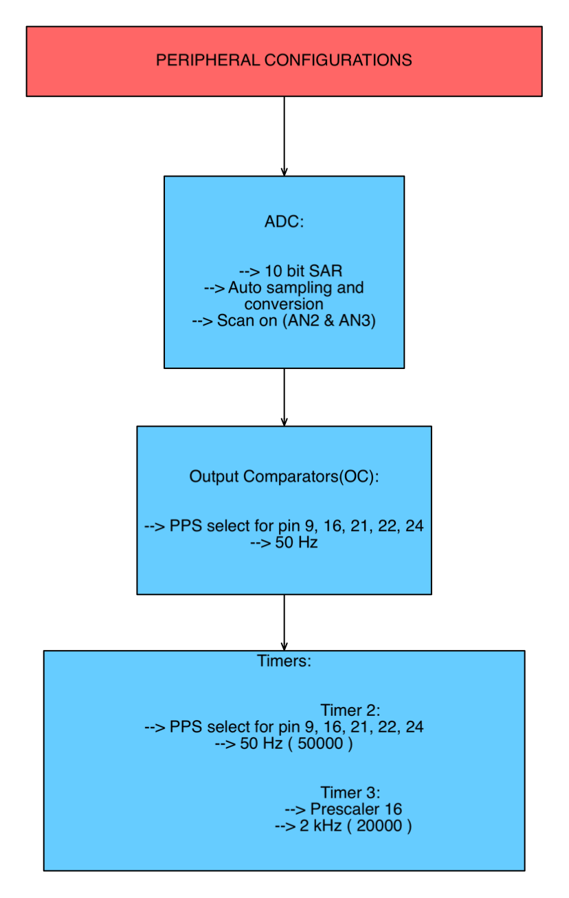
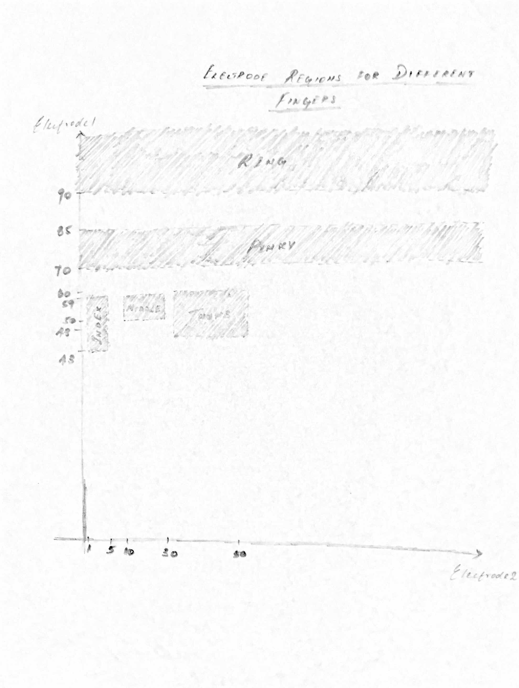
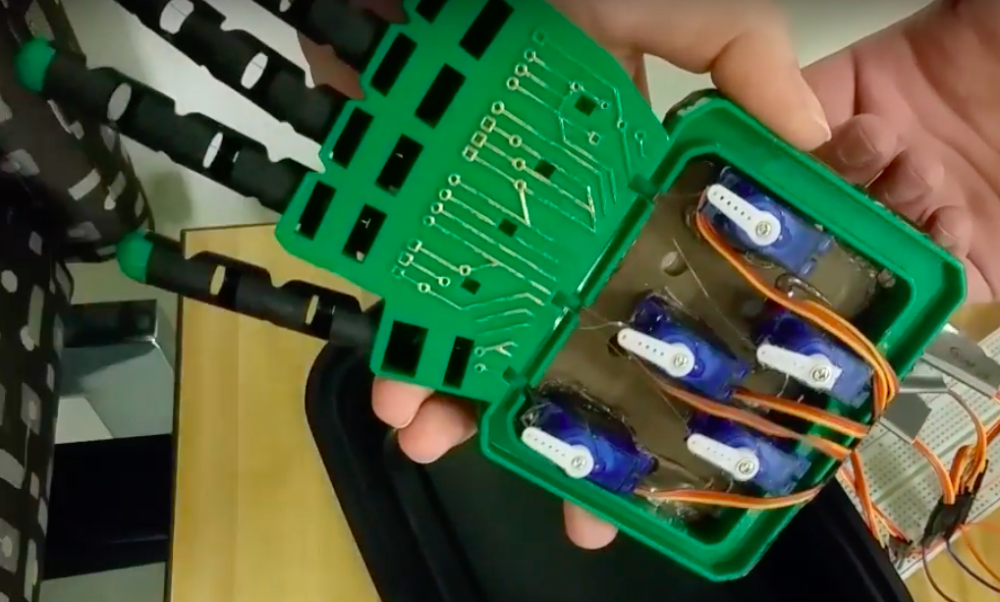
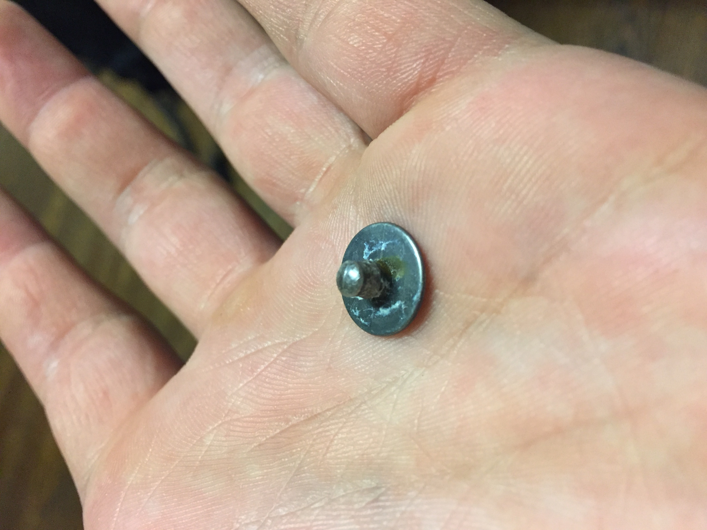
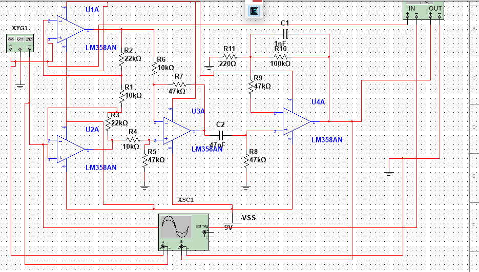

Introduction
The goal of the project was to create a robotic hand that is controlled by sensing the muscular contractions in the arm of the user and to replicate the movements on the robotic hand.
Electrodes will be placed on multiple areas on the arm of the user, and will sense the voltage differences of the muscles as they contract. The signal will be fed into a circuit which amplifies and filters the signal. The resulting signal will then be sent into the PIC32 microcontroller which will analyze the readings. An algorithm then decides which fingers should be moved and uses servos attached to each finger of the hand to move the fingers.
High Level Design
Rationale and Sources of Project Idea
The inspiration for the project came from an interest in the biological signals being triggered in our bodies and how they control different body parts. We wanted to better understand the signals sent to nerves and muscles in our bodies and how we can actually pick up these signals. Currently, much research is done on neural interfaces between humans and machines so we thought an interesting and applicable project would be to control a robotic hand by just using nerve impulses. As a person’s hand moves, the various muscles in the arm contract. We wanted to analyze the signals sent to muscles in the arm and replicate the hand’s motions onto a robotic hand.
Logical Structure & Setup Approach
To read the muscle contractions in the arm, surface electromyography (EMG) techniques was used. Electrodes were placed on two areas on the underside of the arm to read the electrical signals. These places were chosen by empirical estimates, as they produced the greatest muscle contractions when the fingers were pressed. Since the electrodes are placed on the surface of the skin, the signal strength is very weak (~2mV at best) and noisy.
To improve the signal, the signal was fed into an instrumentation amplifier, followed by a high pass filter, a differential amplifier, and finally a low pass filter. The amplified and filtered signals were then fed into Analog to Digital Converters on the PIC32 microcontroller. If certain conditions were met, a finger was determined to be pressed, and servos would pull a string attached to a finger of the robotic hand to contract it.
For the software design, the high level logical structure for the program flow is given by the following:
.png)
Logical structure for the software implementation
As the above flowchart indicates, we read the input value, do some processing and detection based on the input and move the actuator(servo) based on the detection algorithm. This completes the high level software and hardware description.
Hardware/Software Tradeoffs
Since neurons generally fire between 0-500 Hz, a sampling speed of 500 Hz was used for the ADC. This meant that new signal readings were coming in once every 1/500 of a second and the software would need to process and be ready for a new value within that time. Since 500 Hz is a relatively small sampling speed, both hardware and software components were able to process successfully within that time.
To optimize the project even more, we tried to balance the hardware and software sides. To do so, we added a sliding moving averager within software that basically acts like a crude low pass filter since it smoothes out the signal and cuts out higher frequencies. This produced a more consistent and steady signal reading instead of the rapidly oscillating signal coming in directly into the ADC from the electrodes. We also made a design tradeoff by using a cutoff for the high pass filter to be around 72 Hz, so that we had a better elimination of the 60 Hz line noise, at the expense of losing some signal data at these frequencies.
We also made a design tradeoff by using a cutoff for the high pass filter to be around 72 Hz, so that we had a better elimination of the 60 Hz line noise, at the expense of losing some signal data at these frequencies.
Relationship of prject design to available IEEE, ISO, ANSI, DIN, and other standards.
No standards from IEEE, ISO, ANSI, or DIN were used.
Existing patents, copyrights, and trademarks relevant to project.
No patents, copyrights, or trademarks are relevant to the project as all circuits and software was designed by us.
Program/Hardware Design
SOFTWARE DESIGN
ADC
The ADC has two functions: sampling & conversion. The sampling rate for the ADC is set by using a clock divider and changing sample hold time for the ADC. All this is controlled in the initial configuration of the ADC. The ADC is configured to auto sample and convert. We also scan two analog input values (AN2 and AN3), from two different electrodes. The conversion results are placed in ADC buffer 0 and buffer 1. The ADC clock is around 588 kHz.
However, we do not get samples at 588 kHz, as most EMG signals have a frequency range of 5-150 Hz. So we use Timer2 ISR to read ADC buffer values at a predetermined sample rate. We experimented with different sampling rates and found that 500 Hz was good enough for the signal to not have any aliasing. In order to do this, we set the prescaler to 16, and loaded the timer with a value of 50,000. Most of the filtering is done in the ISR. The configurations that were set up for the peripherals involved are summarized in the diagram below:

ADC, OC, & Timer Configurations
Averager
The purpose of the averager is to smoothen out the incoming ADC readings to produce a more consistent signal. Since our body signals contain many oscillations, the input reading to the ADC also contains many oscillations. By using a sliding window averager, the newest signal reading is averaged with the last 127 readings to produce a signal with less variations.
The averager keeps track of the last 127 ADC readings by using a 127x2 matrix called input_history. The first column of the matrix corresponds to electrode pair 1 and the second column corresponds to electrode pair 2. The row corresponds to the nth previous reading. Every time a new voltage is read by the ADC, the ISR calls the averager function to determine the average of the previous readings plus the new reading. It does so by adding all elements in a column of the matrix and then adds the newest ADC reading. It then divides the summation by 128 and sets the result as the filter output, which is sent back to the thresholding function to be analyzed.
To update the input_history matrix, the averager function sets the j-1 element of the matrix to the jth element and sets the 0th element to the newest ADC reading.
.png)
LEFT: Flowchart for the averager implementation
RIGHT: Flowchart for updating history values
Region Detection (Thresholding)
We use two electrodes to detect 5 fingers. Each electrode input has an ADC range of 0-1024. So we can represent the total input space as a 2D square space of size 1024x1024. We then empirically measure the block regions that each finger can correspond to. Even though the relative strengths of different fingers remain the same across different people or environments, the magnitudes themselves were people and environment dependent.
Noise plays a role in determining the regions in the 2D space for different fingers. In order to minimize the noise, we made sure the wires were twisted together tightly; there was no direct power supply from an AC power socket; and we were in an environment of low light away from the 120Hz frequency influence of the above fluorescent bulbs. Even though we were not able to completely eliminate noise, we tried to minimize it as much as we could. We then did empirical estimates for different finger regions by looking at ADC read values in PuTTy. The resulting regions for different fingers is seen in the diagram below:

Finger Regions based on Electrode Inputs
We did addition checking for consistency in these threshold regions to activate a finger movement. We created an array variable called changes which keeps track of the number of times the ADC inputs have been encountered in any of the finger regions. We also created an array variable called finger_state, which is set to 1 if a particular finger is pressed. In our current program, we constrain it such that only one finger can be pressed at a time, as multiple finger detection would require more electrodes and more complexity.
If this number of changes crosses an upper threshold for the finger, we mark that finger as being pressed. Similarly, to measure if a particular finger is released, we decremented the changes variable for a finger if it was outside the finger’s region. If this value goes below a lower threshold, we identify the finger as being released. This is seen just an implementation of hysteresis for the finger input, so that the finger does not rapidly fluctuate up and down due to random noise fluctuations.
We chose to move only one finger at a time. This is done by using constraining only one finger’s state to be pressed at any given time. This is done so that the complexity of our project is reduced. If many finger movement is to be implemented, we would have to use more electrodes and find move innovative ways to isolate regions for combination of fingers.
The flowchart for the finger region identification and hysteresis is shown below:
.png)
Region Identification & Hysteresis flowchart
Servo movement
To control the fingers on the robotic hand, servos attached to string manually pull the fingers down when the servos swing 180 degrees. To control the servos, PWM waves sent to the servo determine which angle the servo points to. For example, when the signal is high for 0.54 ms, the servo is at 0 degrees. When the signal is high for 2.5 ms, the servo points to 180 degrees.
Since operating servos requires a 50 Hz PWM wave and the PIC32 clock cycle is at 40 MHz, or 4010^6 ticks per second, 4010^6 / 50 = 800,000 ticks per period. Since 800,000 overloads the timer, a prescaler of 16 was used. Therefore, 800,000/16 = 50,000 ticks/period with a prescaler of 16. It was found that to get the servos to point to 0 degrees, 1,350 of the 50,000 ticks need to be high. For the servos to point to 180 degrees, 6,250 ticks would need to high out of the total 50,000. Loading the PWM function of the PIC32 with the number of ticks that need to be high during one period allowed us to successfully output PWM waves and control the angle which the servos were pointing at.
Servo lock
Each servo has a finite time to rotate by 180 degrees. We empirically estimated this value to be 600 ms. We had to make sure that no other servo moved when another finger servo was moving, and make sure not to change the state of a particular finger unless 600 ms has passed. Both of these conditions were met by implementing a variable called lock_motor. Initially lock_motor is set to 0 when no finger servo is moving. If there is a change of state and if no other servo is moving, we set lock_motor to the current finger digit and make sure that no other finger moves unless this finger servo resets the lock_motor value back to 0. This is not done for at least 600 ms. Thus, by introducing this variable, we ensure that two finger servos do not move at the same time. The flowchart for this implementation is given below:
.png)
FINGER SERVO MOVEMENT: Flowchart for making sure only one finger servo moved at a given time
HARDWARE DESIGN:
Hand design
The hand itself was ordered pre-made from amazon. 4m Robotic Hand Kit. Each finger is attached to a piece of fishing line which, when pulled, causes the finger to contract. We attached a board at the base of the hand and mounted five servo motors on it, one for each finger. The wires pulling each finger were attached to a servo. In order to move a finger the servos rotate 180 degrees, pulling the wire and bringing the fingers from extended to contracted.

Hand and servo motor setup
Electrodes:
In order to differentiate the signals between the different fingers, we used two sets of two electrodes on the forearm, all referenced to the same ground. For both sets, the two electrodes were placed about a quarter to a half an inch apart and affixed to the arm of the user with tape or foam sticking pads.

Electrode placement markings. The ground electrode was placed on the wrist.
When a muscle receives a signal from the nervous system, it triggers an action potential in the muscle cell, essentially just a voltage difference across the cell membrane. An attenuated version of these voltage differences can be measured on the surface of the skin, after passing through the dielectric medium of veins, body fat, and skin. The action potentials occur at varying frequencies depending on the strength of contraction of the muscle.
The Silver Chloride (AgCl) electrode consists of a silver electrode. A conductive gel containing Chloride ions is applied to the electrodes before they are attached to the skin. When a muscle in the vicinity of an electrode fires an action potential, it can be detected as a current of chloride ions on the skin. The chloride ions bind to a Silver atom and “knock off” an electron (the reverse reaction happens as well). The electron can then travel through a wire connected to the electrode as a normal current.

A Silver Chloride electrode
In order to get a good signal, the electrodes had to placed over the belly of the muscle being read. If the electrodes are placed close to the tendons, the signal will be inconsistent and will not accurately reflect the activity of the muscle. Furthermore, there are several muscles in the forearm in close proximity to one another. This makes it difficult to isolate a signal from only one muscle. In order to differentiate between the different inputs generated by different fingers, we measured the same group of muscles at two different locations. The variable activity between these two inputs allowed us to discriminate between the signals generated by the contraction of different fingers.
Instrumentation Amplifier & Bandpass Filter Design
The signal detectable on the surface of the skin should theoretically be around 2mV, but we found it to be significantly less in practice to be around 10 uV. In order to read this signal, we designed an instrumentation amplifier. Because the resistance of a human body is fairly high, on the order of Megaohms, the input impedance of the amplifier needed to be significantly higher. The instrumentation amplifier design is characterized by extremely high input impedance, low noise, and high common mode rejection. This was ideal for our purposes as combating noise was our most significant challenge during this project. The basic design of the instrumentation amplifier was derived from the schematic in Medical Instrumentation: Application and Design, although we changed the specific resistor and capacitor values. The amplifier we built contains two input op-amps along with a two stage differential amplifier. The gain of the first stage was 25, and the gain of the second stage was 214, for an overall gain of 5350. The amplifier contains high and low-pass filters, which are intended to reduce the signal received to the frequency ranges that were relevant to us. The low-pass filter has a cutoff frequency of ~1500Hz, and the High-pass filter has a cutoff of 72Hz. This was aimed at eliminating 60Hz line noise.

Instrumentation amplifier simulation schematic.
(Note: the actual op-amps used in the circuit were LF353, not LM358. Unfortunately the design software does not have these as an option. However, the results were are good estimates of the actual design )
The final circuit contained two of these amplifiers, one for each of the two sets of electrodes. Running the circuit simulation, the oscilloscope output was seen to be:
Oscilloscope output: The input amplitude is 20 uV, and the output amplitude is 160 mV approximately. We see that we at least have a good enough gain to measure, as the ADC resolution is 3.3/1024 = 3.2 mV.
The bandpass filter is seen in the diagram below:

Bode Plot Viewer: The plot shows a bandpass filter that has a peak gain of 80.561 dB at around 265 Hz.
Failed approaches:
Butterworth Filter
The moving averager was still not consistent enough to smooth out the fluctuations. So we tried using a butterworth lowpass filter to smooth out the high frequency fluctuations by using as little coefficients as possible. However, we found that the filter we wanted to implement still did not eliminate the noise levels we wanted. If we remedied the above by using a low cutoff frequency and a high pole filter, we faced the problem of having a slow rise time for the filtered signal. Thus we abandoned the above approach.
Neural Network
Neural network was very promising initially. We were able to predict individual fingers with good probabilities at certain instances. However, surface EMG is such a noise dependent measurement, that it the network has to be trained every time the person or the environment is changed. Even with this being an obstacle that can be overcome, there needs to be more hidden layers in the network to get more accuracy with more training data. With a single layer of 20 nodes, we used 500 us. The computation time increases exponentially with more layers. This can be remedied by using external flash memory, but we abandoned that decision by our budget constraints.
Differential OpAmp
Before using the instrumentation amplifier design, we attempted to do a simple two stage differential amplifier. This was somewhat sufficient, but quite noisy. The impedance of the amplifier was of the same order of magnitude as that of the user. This caused the amplifier to be very poor.
Isolating each finger based on muscle location
The original plan for discriminating between different finger inputs was to locate the muscle responsible for contracting each finger and attach a set of electrodes to it. This proved too difficult as the muscles in the forearm are close together and some are buried beneath others.